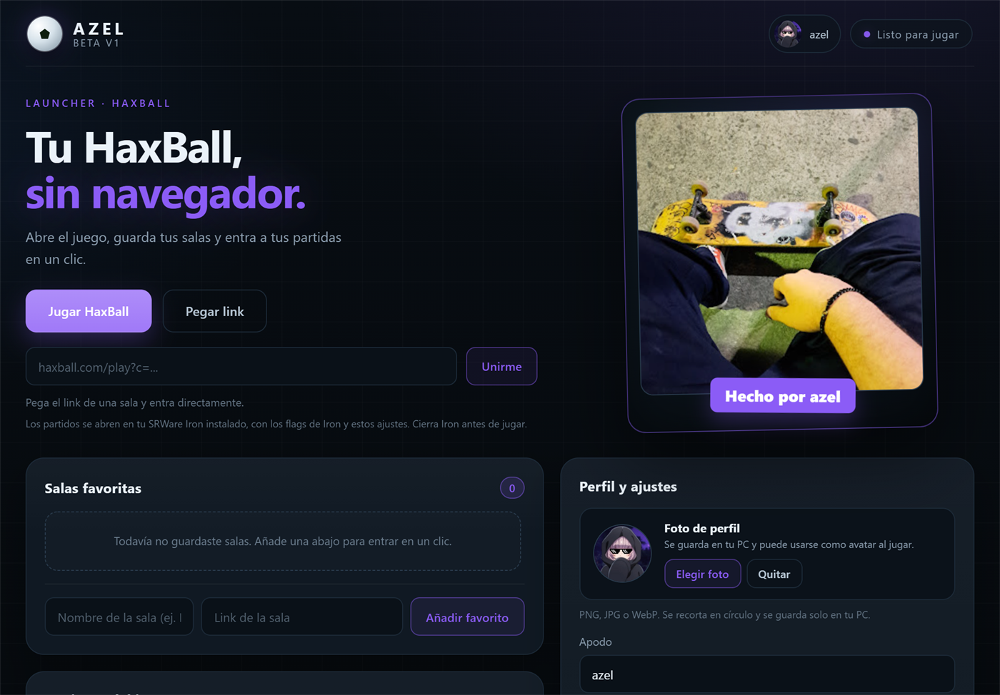

Salas favoritas
Guarda tus salas con nombre y entra a cada una con un solo clic, sin volver a buscar el link.
Launcher para HaxBall · Windows
Abre el juego, guarda tus salas y entra a tus partidas en un clic. Iron viene incluido: instalas una vez y juegas.

Funciones
Ajustes pensados para jugar, no para configurar.
Guarda tus salas con nombre y entra a cada una con un solo clic, sin volver a buscar el link.
Pega el link de cualquier sala y únete al instante. También puedes pegar el link desde el portapapeles.
Juega a 1440 × 1080 o la medida que quieras. En pantalla completa el campo se estira para llenar todo.
Cambia el color del launcher y de los menús de HaxBall, o activa los gráficos simplificados para ir más fluido.
Límite de FPS ilimitado y flags de Iron orientados a jugar con la menor latencia posible en cada partida.
Tu perfil muestra “Jugando HaxBall” mientras estás en una sala. Ya viene configurado, no creas nada.
Sin configuración
Antes tenías que descargar SRWare Iron y una extensión que muchas versiones nuevas rechazaban. Ahora azel trae su propia copia de Iron con un perfil aparte: no toca tu navegador, no pide descargas extra y funciona aunque tengas otra versión instalada.
Instalar
Sin Iron aparte, sin extensiones y sin crear cuentas.
Un solo archivo para Windows 10 y 11 de 64 bits.
Si Windows avisa que no reconoce el archivo, pulsa “Más información” y luego “Ejecutar de todas formas”.
HaxBall se abre con Iron, tus mods y tu apodo ya aplicados.
¿Por qué Windows avisa? El instalador todavía no tiene firma digital, así que SmartScreen lo marca como desconocido. El aviso es normal y solo aparece la primera vez.
Beta v1 · 0.1.0
Gratis para Windows. Instalas una vez y juegas cuando quieras.
La versión portable es un solo .exe: se abre sin instalar nada.
Preguntas
No. azel trae su propio Iron y abre HaxBall desde ahí. Solo necesitas conexión a internet para entrar a las salas.
Porque el instalador no tiene firma digital todavía. Es una app independiente hecha por una persona, no por una empresa. Puedes comprobar el archivo y ejecutarlo con “Más información” → “Ejecutar de todas formas”.
En tu PC, dentro de la carpeta de datos de azel: salas favoritas, apodo, foto y ajustes. No se suben a ningún servidor.
Sí. El color se aplica al launcher y a los menús de HaxBall, y la resolución personalizada deja el campo a la medida de tu pantalla.
Está pensado para Windows 10 y 11 de 64 bits. Probado en Windows 10.
Sí. Es una beta hecha para aprender, sin anuncios ni cuentas.